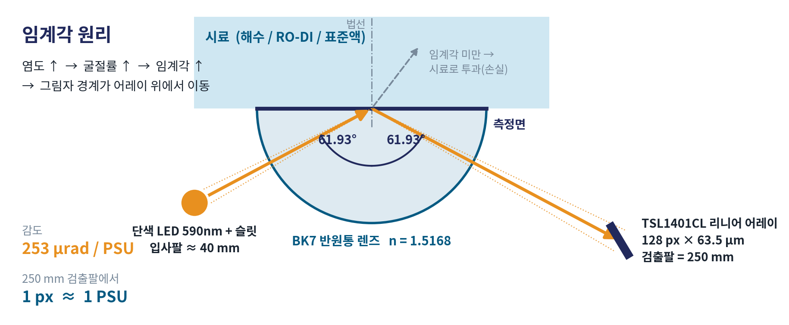
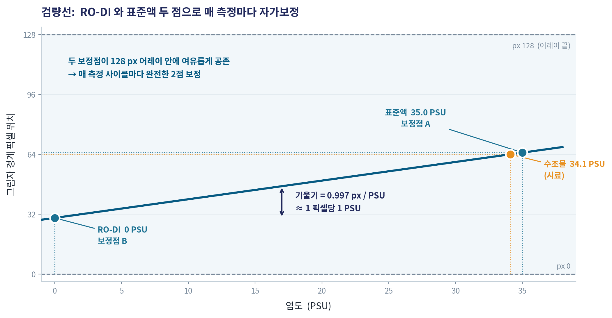
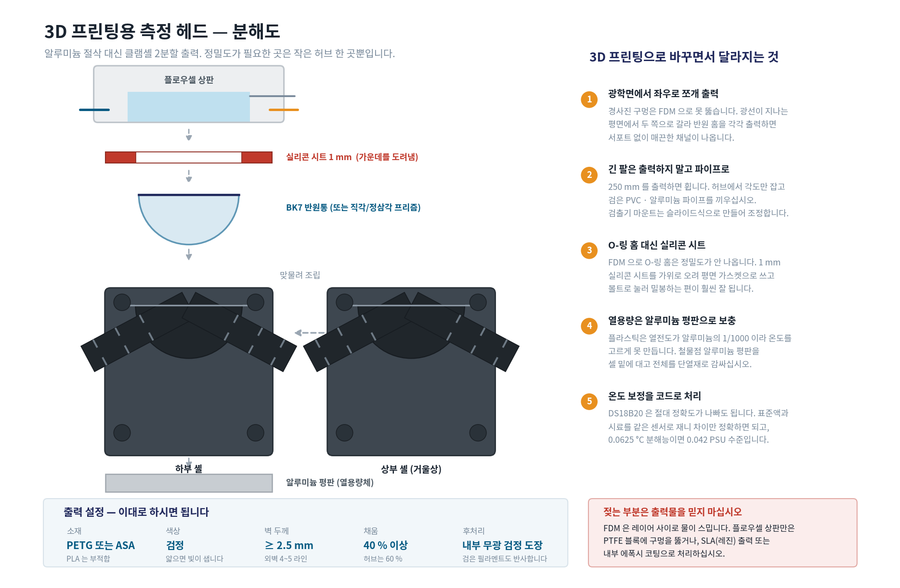
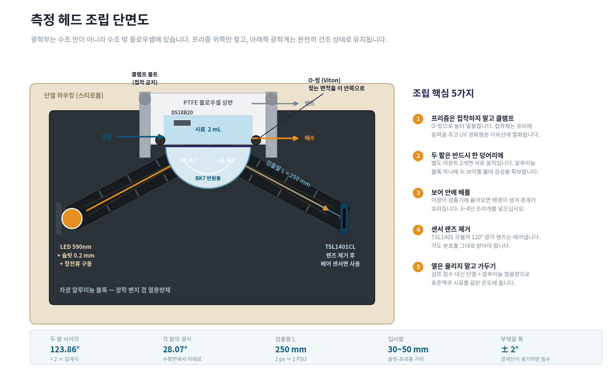
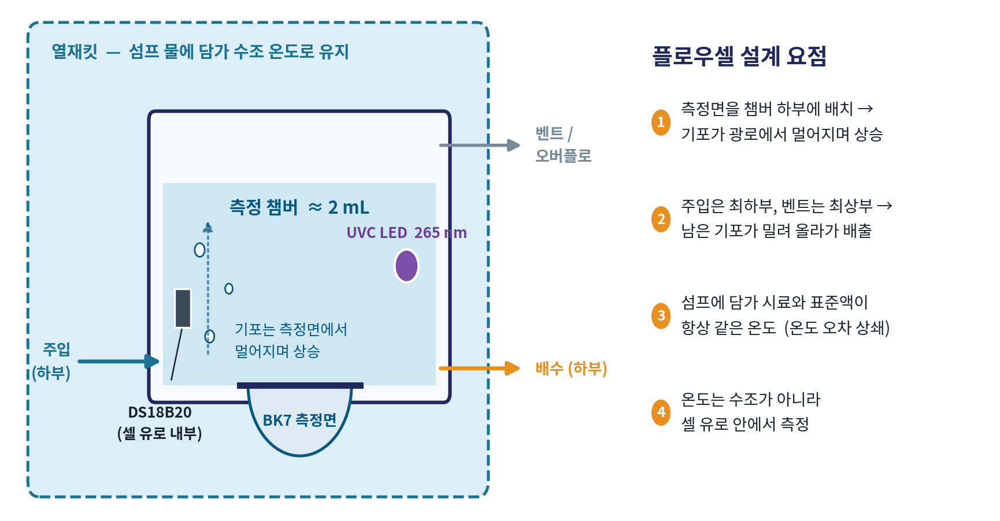
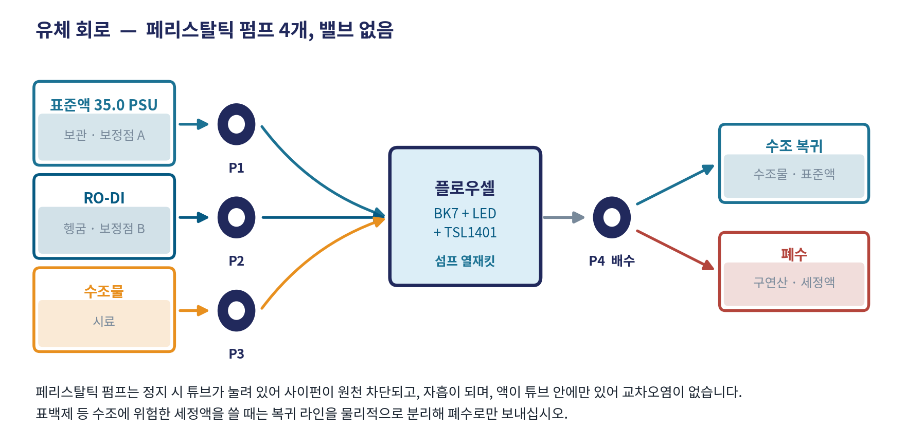
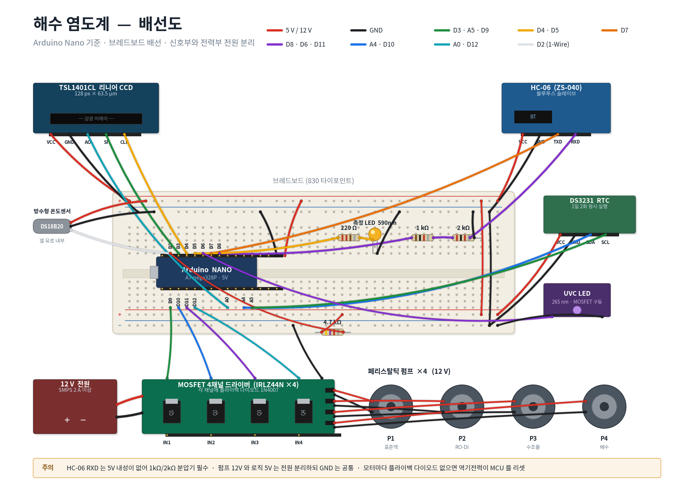
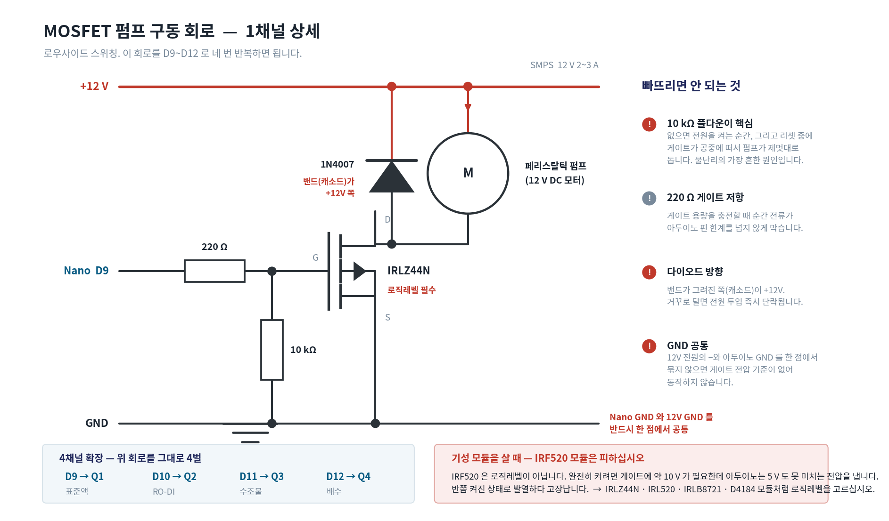
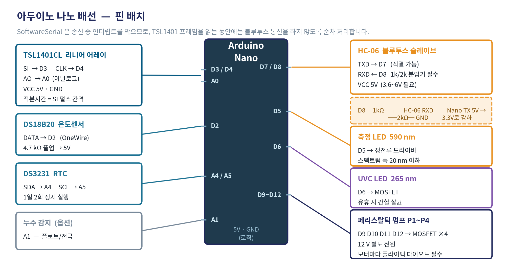

모두 matplotlib 으로 그린 것이고 src/diag*.py · src/head.py 등으로
재생성됩니다. 일부는 2026-08-31 기준이라 이후 정정이 반영돼 있지 않습니다 —
해당 도면에는 갱신 필요 를 붙이고 무엇이 달라졌는지 적었습니다.
프리즘이 BK7 → 아크릴 활꼴로, 두 팔 사이각이 123.9° → 149.3°로, 셀 용적이 2 mL → 0.2 mL로 바뀌었습니다. 도면과 문서가 어긋나면 문서가 최신입니다.
제작에 바로 쓸 수 있는 최신 치수는 제작 템플릿 과
저장소의 HOBBY_BUILD.md 에 있습니다.
설계 문서 pptx 3·4장에 실린 그림

fig_optics.png프리즘·시료 경계에서 전반사가 끊기는 각도를 읽는 구조. 그림은 BK7 n=1.5168 기준이라 임계각 61.93° 로 그려져 있습니다. 조달 확정된 아크릴(n=1.491)은 63.85° 입니다.
사이각 표기가 없어 그 부분은 무해합니다. 원리를 움직이며 보려면 그림자 경계의 정체 쪽이 훨씬 낫습니다.

fig_cal.png매 사이클 RO-DI(0 PSU)와 표준액(35 PSU)을 재서 검량선을 실측합니다. 이 한 줄이 설계 전체를 지탱합니다 — 프리즘·팔 길이·조립 치수를 미리 알 필요가 없어집니다.
기울기가 0.997 px/PSU(BK7)로 그려져 있습니다. 아크릴 활꼴이면 1.18 px/PSU 입니다.
3D 프린팅으로 가는 경우 fig_printed 쪽을 보십시오

fig_printed.png광선이 지나는 평면에서 좌우로 가르면 각 쪽에 반원 홈이 위를 향한 채 남아 서포트 없이 매끈한 채널이 나옵니다. 이 트릭은 지금 설계에서도 그대로 씁니다.
단, 25 mm 급 프리즘 기준입니다. 조달품은 두께 6 mm 이므로 셀 치수를 다시 잡아야 합니다. 1순위 벤치는 밀봉이 아예 없으므로 제작 템플릿 부터 시작하십시오.

fig_head.png알루미늄 절삭 가공 기준입니다. 이 프로젝트는 절삭이 불가해서 위
fig_printed 로 갈아탔습니다. 부품 간 관계를 이해하는 용도로만 보십시오.

fig_cell.png기포와 온도가 요점입니다. 기포 하나가 측정면에서 n=1.0 이 되어 경계를 망가뜨립니다.
셀 용적이 2 mL 로 그려져 있습니다. 프리즘 두께가 정해지며 60~480 µl 로 줄었습니다 — 이월 오차와 플러시 시간 면에서는 오히려 유리합니다.

fig_fluidics.png페리스탈틱 펌프 4개(표준액 / RO-DI / 수조물 / 배수). 정지 시 튜브가 눌려 사이펀이 원천 차단되는 것이 핵심이고, 수조에 연결되는 장치에서 이건 타협 대상이 아닙니다.
유휴 시 셀을 35 PSU 표준액으로 채워 둡니다 — RO-DI 로 채우면 잔류액 오차가 34배 커집니다.
이 세 장은 정정 사항이 없습니다

fig_breadboard.pngFritzing 스타일 전체 배선. HC-06 RXD 에 1 kΩ/2 kΩ 분압기를 빠뜨리지 마십시오 — ZS-040 보드의 통신 핀은 3.3 V 소자라 나노의 5 V TX 를 직결하면 모듈이 손상됩니다.

fig_mosfet.png배선도의 모듈 블록 내부입니다. 게이트 10 kΩ 풀다운이 없으면 전원 투입·리셋 순간에 게이트가 떠서 펌프가 폭주합니다 — 수조 옆에서는 물난리로 직결됩니다.
플라이백 다이오드 방향을 반대로 달면 전원 투입 즉시 단락입니다. IRF520 모듈은 로직레벨이 아니라 반쯤 켜진 채 발열하다 고장납니다.

fig_wiring.png핀 여유가 충분하며, 12 V 펌프 전원은 로직과 분리하고 GND 만 한 점에서 공통으로 묶습니다. 스케치는 아직 작성되지 않았습니다(2순위).
모두 matplotlib 으로 생성합니다. 저장소를 받아서:
python src/diag1_optics.py · diag2_calibration.py ·
diag3_cell.py · diag4_fluidics.py · diag5_wiring.py ·
src/head.py · printed.py · mosfet.py ·
src/fritz.py
그림은 docs/figures/ 에 바로 떨어져 기존 파일을 덮어씁니다. 시험용으로는
PSU_FIG_DIR 로 다른 곳을 지정하십시오. 한글 폰트는
src/kfont.py 가 플랫폼별로 찾습니다.
{kind=link}
{kind=link}
{kind=link}
{kind=link}
{kind=link}
{kind=link}
{kind=link}
{kind=link}
{kind=link}